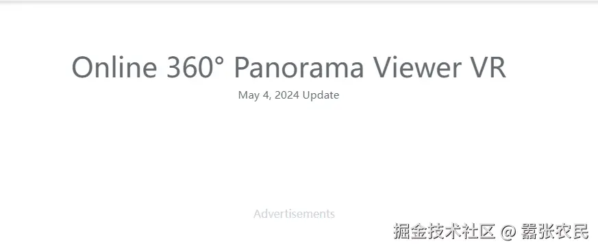
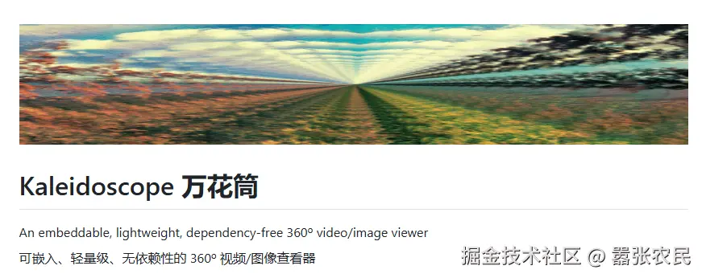
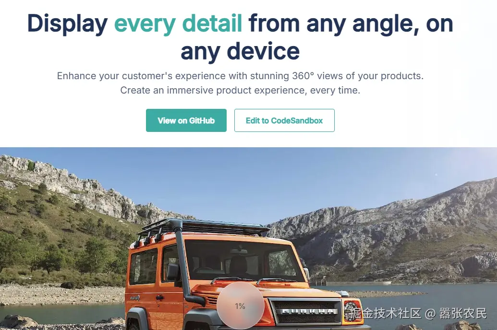
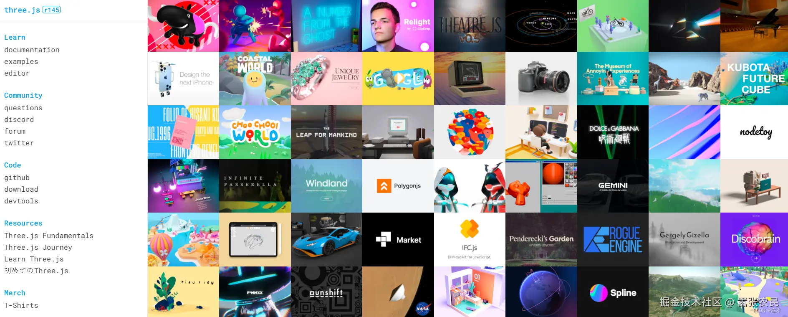
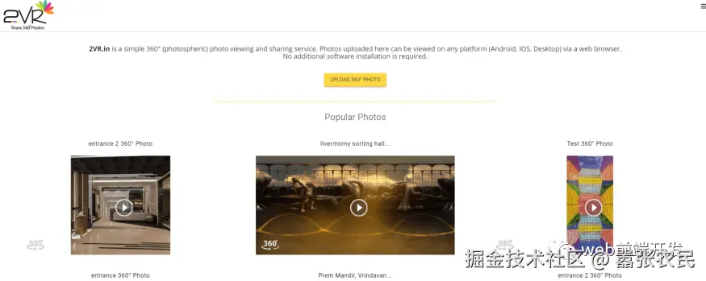
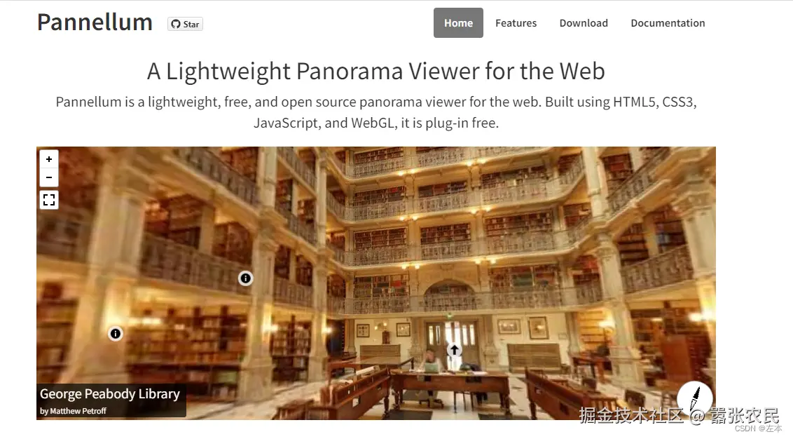
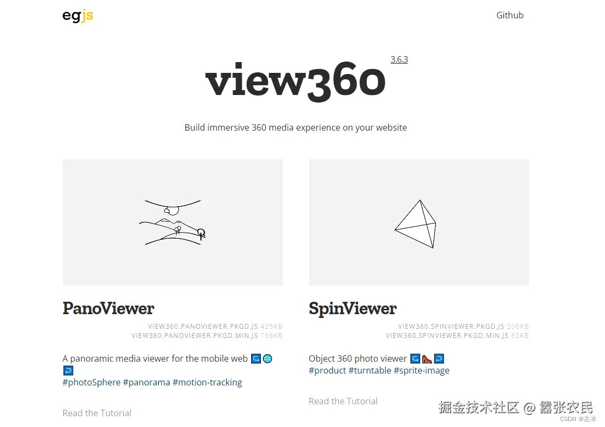
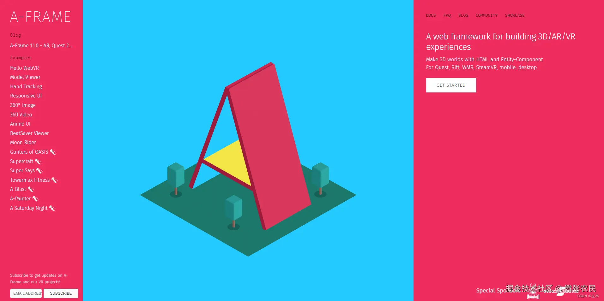
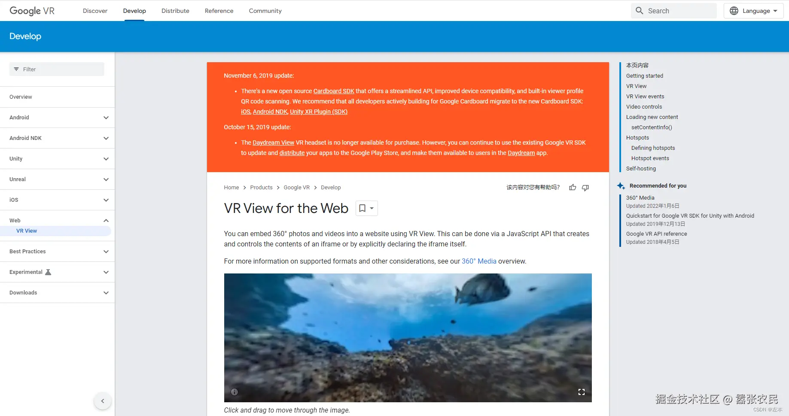
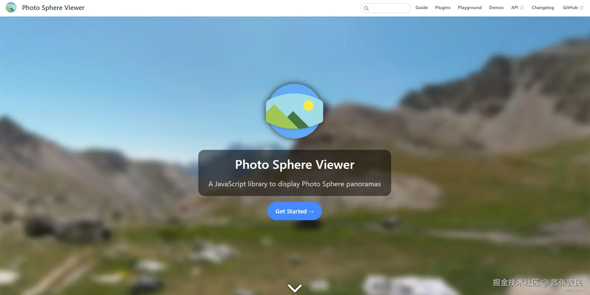

HaoTian · 2024-11-16 08:39:42
地址：renderstuff.com/tools/360-p…
360-image-viewer 也是一个类似于上面的库，可以帮助您显示图像的全景图。各种设备屏幕上的照片、视频和响应能力。仅约 46kb（压缩后）的大小。使用此库时可以轻松优化站点的性能。
Kaleidoscope 是一个开源的 Javascript 库，它可以轻松地为照片或视频构建 360 度方便的方法查看器。
如果你需要一个紧凑的库，不要使用额外的库，它能满足显示视频和全景图像的基本元素，我认为这个库是您不错的选择
地址：scaleflex.github.io/js-cloudima…
JS Cloudimage 360 View 是一个用 Javascript 编写的紧凑型开源库，可以轻松实现 360 度显示图像，并提供更多功能帮助用户更便捷的交互。
如全屏显示、lazyload 功能、图像放大镜。此外，它还提供您可以通过非常简单的设置直接用于网站的 CDN 只需将它提供的属性调用到我们想要显示 360 的 HTML 对象图像中。
地址：threejs.org/
Threejs 是基于 WebGL 封装的 3D 引擎框架，降低了前端开发 3D 效果的难度，很容易就可以 Web3D 效果
地址：www.2vr.in/
地址：pchen66.github.io/Panolens/
基于 Threejs 封装的全景框架，只需要引用three.min.js 和 panolens.min.js
一个轻量级的 Web 全景查看器，Pannellum 是一个轻量级、免费、开源的网络全景查看器。它使用 HTML5、CSS3、JavaScript 和 WebGL 构建，不含插件。
地址：naver.github.io/egjs-view36…
地址：aframe.io/
地址：developers.google.com/vr/develop/…
地址：photo-sphere-viewer.js.org/
